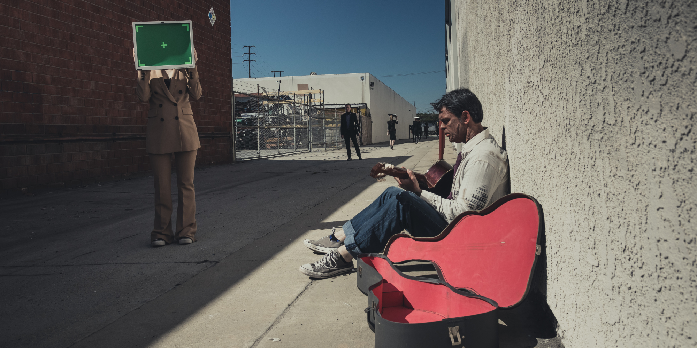
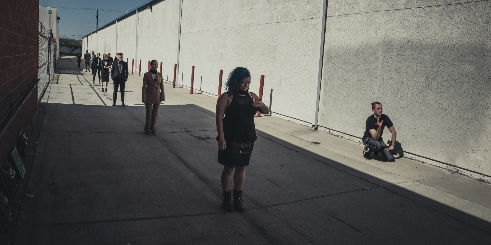
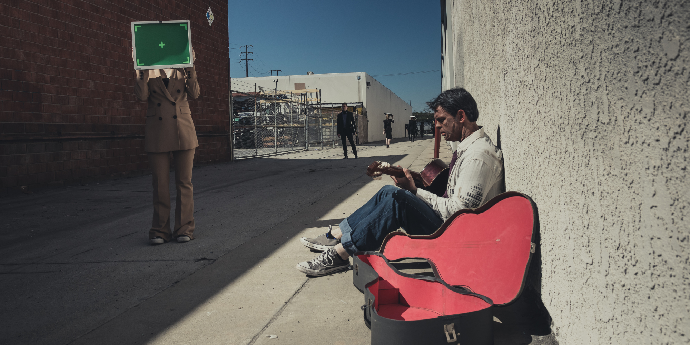
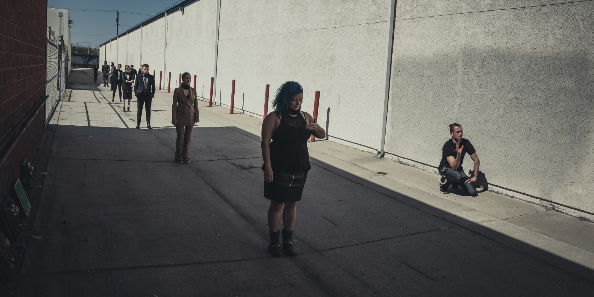

<ARTIFICIAL.INTELLIGENCE/>
<A.STORY.ABOUT.IT/>
A. I. (Abbr. "Artificial Intelligence") is a short story that carries a "more human than human" message. Instrumental music is composed using sample sounds of factory noises instead of drums and features solo guitar with a fusion of progressive/rock/jazz styles. The track has a mild tempo with emphasis on space between downbeats.
The video plot is centered around a young girl (A.I.) who is having a hard time finding friends among humans. She is building a robot in her garage hoping he can become one. Our society is shown as a numb crowd having their heads replaced with TVs heading in one direction to nowhere. The girl is missing one part that will allow the robot to come alive but suddenly she meets a street musician who has it. The ending is open to interpretation.
 


